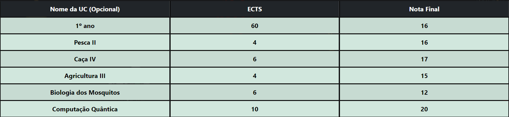

Esta é uma ferramente que te permite calcular a tua média do ensino superior inserindo o número de créditos e a nota de cada cadeira.
Embora algumas Universidades tenham os seus próprias sistemas que calculam a tua média, com esta ferramenta podes fazer contas ao teu futuro e ter uma noção de como as futuras cadeiras podem aumentar ou diminui a tua média ou analisar se vale a pena ires a um certo recurso ou não.
Não! Imaginemos que já sabes a média do teu primeiro ano (equivalente a 60 ECTS). Podes inserir a tua média atual e o número de ECTS (60) no primeiro campo e as outras cadeiras nos outros campos. Por exemplo:
